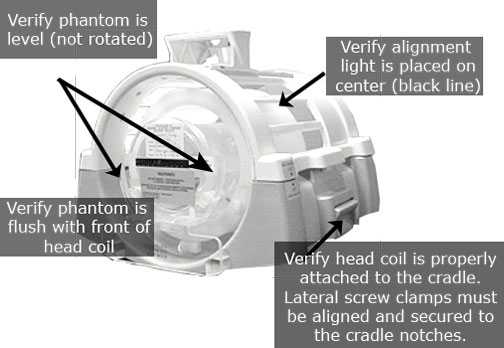
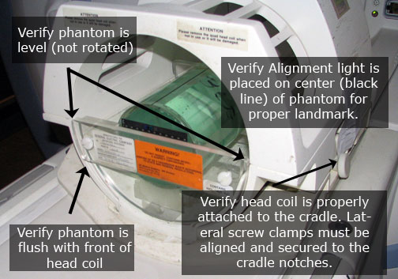
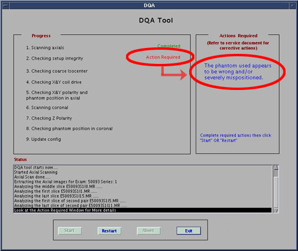

Operating Documentation
Direction 5670006, Rev# 1
Discovery MR750w GEM Service Methods
Module Version 4.0, Version Date 8/16/10
Operating Documentation |
| Required Persons | Preliminary Reqs | Procedure | Finalization |
|---|---|---|---|
| 1 | Not Applicable | 30 mins | Not Applicable |
The DQA tool will determine proper gradient polarity (positive to positive and negative to negative) and proper gradient wiring (X amp drives X coil, Y amp drives Y coil, Z amp drives Z coil) by scanning a series of Axial and Coronal images of the DQA-III Phantom. The tool will also verify that the proper phantom is being used. After proper Gradient orientation is confirmed, the tool will adjust for Z-ISO-Center and Grad cal. If Z-ISO adjustments or Grad cal adjustments are needed, the DQA tool will need to restart. Therefore, the DQA's completion time will vary.
| Item | Qty | Effectivity | Part# | Manufacturer | |
|---|---|---|---|---|---|
| Green Solution, No Loader | 1 | 1.5T With Old Style Head Coil | 2131027-2 | - | |
| Green Solution, With Loader | 1 | 1.5T With New Style Head Coil | 2322997-2 | - | |
| Clear Solution, No Loader | 1 | 3.0T Long Bore Magnet (E2) | 2258365 | - | |
| Green Solution, With Loader | 1 | 3.0T Short Bore Magnet | 2322997-2 | - | |
| Condition | Reference | Effectivity |
|---|---|---|
Laser Light Alignment completed. | - | - |
| ||||
| Verify That The Laser Alignment Has Been Complete. Pay Close Attention To Position The Alignment Light On The Phantom, As This Procedure Requires An Accurate Landmark. | ||||
| ||||
| If Problems Are Encountered Performing This Calibration, See The DQA Troubleshooting Document. | ||||
| NOTE: | For 3T systems with G3 Magnet, the DQA phantom with pink solution is no longer used. Use the DQA phantom with green solution part number 2322997-2. |
Insert the appropriate DQA-III Phantom into head coil, and verify its orientation and that it is level. See Illustration 1 and Illustration 2.
Table 1: Phantoms
| System Type | Phantom | Part Number | Illustration |
| 1.5T with old style head coil | Green Solution, no loader | 2131027-2 | Illustration 2 |
| 1.5T with new style head coil | Green solution, with loader | 2322997-2 | Illustration 1 |
| 3.0T Long bore magnet (E2) | Clear solution, no loader | 2258365 | Illustration 2 |
| 3.0T Short bore magnet | Green solution, with loader | 2322997-2 | Illustration 1 |
| ||||
| The correct phantom type, position and landmark are all critical to successful operation of the DQA-II tool. | ||||
Landmark on the centerline of the DQA-III Phantom. Laser must be in middle of black circumferential maker line.
Illustration 1: Phantom Orientation, split top head coil

Illustration 2: Old Phantom Orientation, bird cage head coil

Start the DQA Tool.
Make sure the Service key is installed. In the Common Service Desktop, select [Calibration Wizard] from the calibration menu and select [Click here to start this tool]. Once the Calibration Wizard starts, select [DQA] from the menu, review and okay the pre & post-dependencies, and select [Click here to start this tool] to start the procedure.
Starting non-proprietary service tools: From the Common Service Desktop, select [Calibration], [DQA] from the calibration menu, and select [Click here to start this tool] to start the procedure.
A new window will appear (see Illustration 3). Select [Start ]to begin the DQA calibration.
Illustration 3: DQA at Startup

| NOTE: | All phantom images acquired during the DQA Tool can be viewed in the browser. You can view these images if problems occur (see DQA Troubleshooting). |
| NOTE: | To stop the DQA Tool without restarting it click [Abort] at any point. |
As the DQA tool progresses, the status appears in the Progress area. If problems are encountered, they will appear in the Action Required section (see Illustration 4).
Illustration 4: DQA Screen with Actions Required

| NOTE: | Once you have addressed the issues indicated in the Action Required, click [Restart]. This will start the DQA Tool again from the beginning. |
The tool will indicate when it has completed successfully (see Illustration 5).
Illustration 5: Successful Test

| NOTE: | To restart the DQA Tool at any point during the process click [Restart]. To stop the DQA Tool without restarting it click [Abort]. |
Click [Exit] to exit the tool.